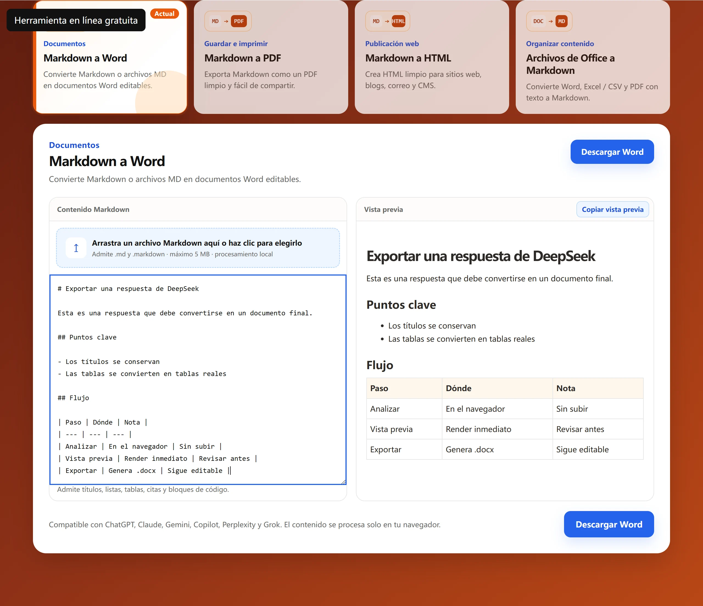

IA a Word
Copiar una respuesta de IA a Word sin perder el formato
El pegado directo suele alterar los espacios, la indentación de las listas y los bordes de las tablas. Un flujo más fiable: conservar la estructura Markdown de la respuesta, revisarla en la vista previa y exportar un archivo DOCX real.

Lo que el portapapeles conserva realmente
El mismo comando «copiar» produce un Markdown distinto según la plataforma de origen, y esa diferencia decide lo limpio que quedará el documento final.
| Copiado desde | Qué contiene el portapapeles | Qué revisar tras pegar |
|---|---|---|
| ChatGPT | Encabezados y listas como Markdown, tablas de barras | Bloques de código que contienen líneas vacías |
| Claude | Los pasajes citados llegan como citas | Las citas anidadas pueden quedar más profundas de lo previsto |
| Gemini | Las tablas a veces llegan como texto separado por tabulaciones | Convierte esas filas en una tabla de barras antes de generar el archivo |
| Una app móvil | Texto enriquecido sin marcadores Markdown | Los marcadores de encabezado pueden faltar por completo |
Cuando la copia pierde la estructura
- Usa la acción «copiar como Markdown» de la plataforma si existe; conserva los marcadores de encabezado.
- Si solo hay texto enriquecido, pega en el editor y vuelve a añadir
#en las líneas que deben ser encabezados. - Imágenes y gráficos nunca pasan por el portapapeles: expórtalos aparte.
Límites que conviene conocer
- La herramienta reproduce la estructura, no el tema visual de la plataforma de origen.
- Las listas numeradas reinician la numeración donde empieza una lista nueva; las respuestas largas con numeración interrumpida requieren una revisión manual.
- Las notas al pie se conservan como texto plano, no como objetos de nota de Word.
Preguntas sobre copiar desde chats de IA
¿Por qué desaparecieron los encabezados tras pegar?
La copia en texto enriquecido elimina los marcadores Markdown. Usa la acción «copiar como Markdown» de la plataforma, o vuelve a añadir # en las líneas que deben ser encabezados.
¿Desde qué plataformas puedo pegar?
Desde cualquier fuente que proporcione texto: el resultado solo depende de si el portapapeles contiene Markdown o párrafos planos.
¿Pueden varias respuestas compartir un documento?
Sí. Separa cada respuesta con un encabezado para que el documento conserve un esquema legible.
Si el resultado no se ve bien
- El texto en negrita queda literal.Los asteriscos llegaron como caracteres: el portapapeles contenía texto plano con marcadores visibles, no énfasis renderizado.
- Las citas se convirtieron en párrafos normales.Falta el prefijo
>; vuelve a añadirlo en la primera línea de cada bloque citado. - El código en línea perdió el formato.Las comillas invertidas deben pegar directamente al texto, sin espacio dentro.